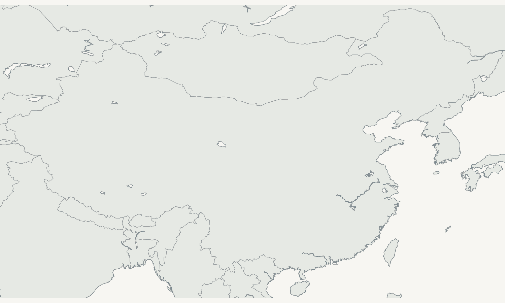

PUBLIC EVIDENCE ATLAS · 2026
零碳园区
公开数据图谱
Zero-Carbon Park Data Atlas
基于公开证据构建的全国零碳园区建设状态、数据透明度与评价数据准备度平台。
方法边界：公开信息用于验证建设状态和判断数据可获得性；完整评价仍依赖园区台账、企业调查与监测系统。
NATIONAL LANDSCAPE
全国园区地图
点位用于园区导航，并非园区法定边界。建设状态使用名单与认定文件，不表示园区绩效。
读取中…

正式认定建设名单
PARK PROFILE
园区公开画像
画像只整理公开可验证事实，不生成综合绿色分数。
DATA TRANSPARENCY
数据透明度
数据透明度仅表示公开信息可获得性，不代表园区绿色低碳发展水平。
42-INDICATOR READINESS
完整评价数据准备度
按数据获取方式展示42项准备状态。缺失为空，不折算为0。
C55-P STATUS FOCUS
绿色低碳建设状态专题
数量从CSV动态汇总，当前状态与历史记录分开呈现。
建设名单园区
历史状态
TRACEABLE EVIDENCE
数据来源
所有公开状态与公开值通过Evidence_ID回到统一证据库。
| Evidence ID | 园区 | 公开事实 | 发布者 / 年份 | 来源 |
|---|
METHODOLOGY
方法说明
本网站展示什么
公开数据可验证的园区建设状态、公开信息透明度、42项完整评价的数据准备状态及可追溯证据。
本网站不做什么
不计算67园区综合绿色发展评分，不输出绿色发展排名、benchmark或100分总分。公开信息缺失不代表园区表现较差。
完整评价还需要什么
园区填报、企业调查、环境监测、能源监测、水务数据、安全管理系统和智慧园区数据。